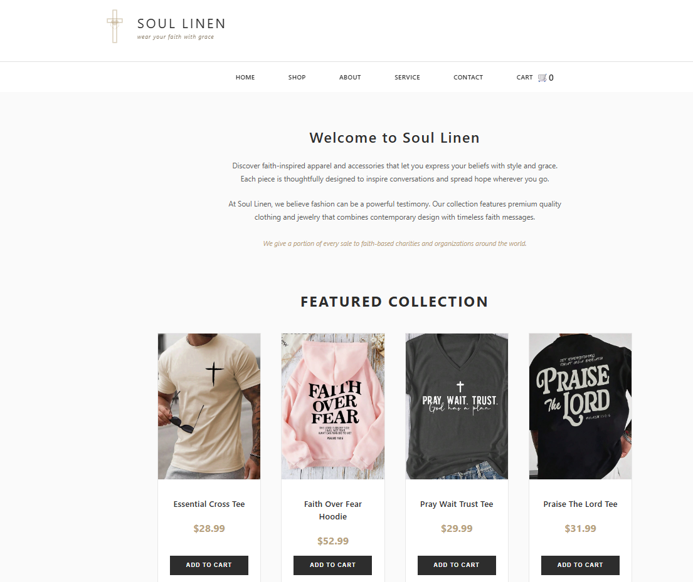
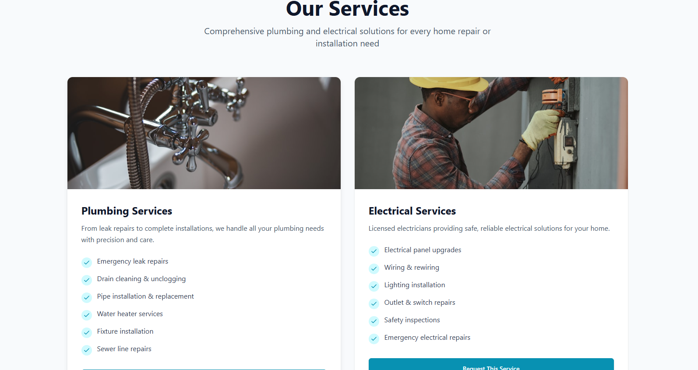

Projects
Completed Projects

Soul Linen - Christian Apparel Brand
An elegant e-commerce platform for Soul Linen, a faith-based clothing brand. The website emphasizes minimalist design with a focus on showcasing premium quality Christian-themed apparel.
Built with a modern tech stack featuring responsive design, smooth animations, and an intuitive shopping experience.
Learn More →
Grace By Faith - Faith-Based E-Commerce
A modern e-commerce website with a soft, feminine aesthetic featuring pink tones. Designed for faith-inspired fashion and lifestyle products with an emphasis on grace and elegance.
Features include customized themes, structured content, and a seamless shopping experience.
Learn More →Soul Linen Website - Live Preview
About This Project
Soul Linen is a modern WordPress website designed for a lifestyle and fashion brand. The goal was to create a clean, calming, and user-friendly interface that reflects the brand's faith-based values with a warm, earthy aesthetic.
The website features:
- Clean, minimalist design with elegant typography
- Responsive layout optimized for all devices
- E-commerce functionality for faith-inspired apparel
- Custom WordPress theme development
- Seamless navigation and user experience
Project Gallery

Grace By Faith Website
About This Project
Grace By Faith is a faith-based e-commerce platform featuring a soft, feminine design with pink aesthetic tones. The website creates a warm and welcoming shopping experience for customers seeking faith-inspired fashion and lifestyle products.
Key features include:
- Soft pink color scheme with elegant design elements
- Faith-inspired product showcase and messaging
- Fully responsive mobile-first approach
- Intuitive navigation and shopping cart experience
- Brand storytelling through visual design
Project Gallery

Work in Progress
Concept projects currently under development

Nikki Electrical Plumbing Services
A professional service website for a licensed plumbing and electrical business. Features a modern, trustworthy design with clear service offerings and call-to-action elements.
Includes comprehensive service listings, contact forms, and responsive layouts optimized for lead generation.
Nikki Electrical Plumbing Services - Live Preview
About This Project
Nikki Electrical Plumbing Services is a concept website designed for a professional home services business. The site aims to establish trust and credibility while making it easy for homeowners to request services.
The website features:
- Professional hero section with strong call-to-action
- Comprehensive service listings for plumbing and electrical work
- Trust indicators (licensed, insured, years of experience)
- Dark, professional color scheme with teal accents
- Mobile-responsive design for on-the-go customers
- Clear contact options and quote request forms
Project Gallery
